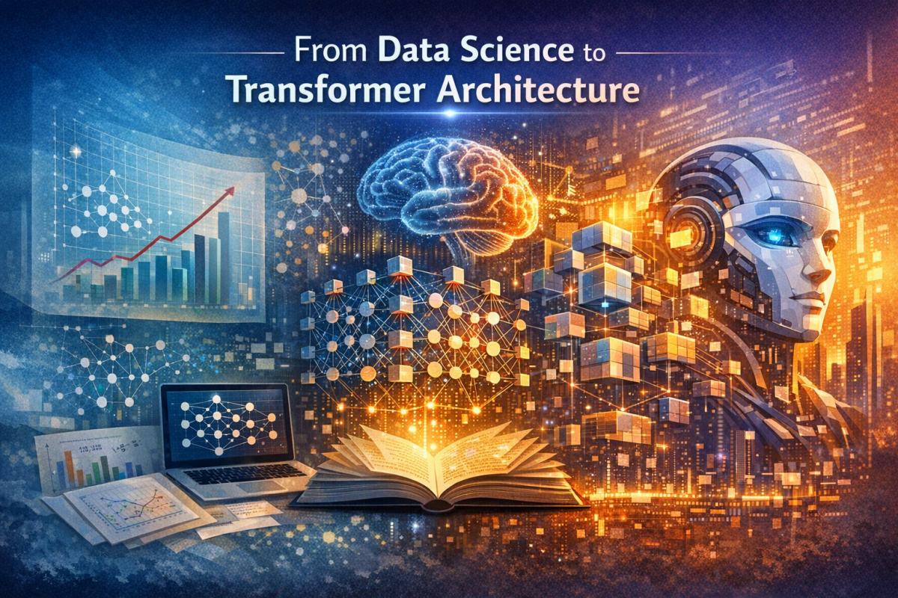

Artificial intelligence did not appear overnight. What we call modern AI is the result of a long technological evolution — from simple statistical models and rule-based systems to deep neural networks and large transformer architectures capable of understanding and generating human language, images, and code. At Aitetic, we see this evolution not just as a timeline of progress, but as a path of experimentation. Every stage in AI development has introduced new ideas, new limitations, and new opportunities. Understanding this path helps explain why transformer-based systems became such a major breakthrough — and why smaller, more efficient models still matter.
Before the rise of large neural models, much of practical AI lived under the umbrella of data science. The focus was clear: collect structured data, clean it, engineer features, and train models to classify, predict, or optimize. This era produced powerful and useful systems. Linear regression, decision trees, random forests, support vector machines, and gradient boosting became the foundation of real-world machine learning. These methods were often efficient, interpretable, and surprisingly effective when paired with well-designed datasets. But they had a limitation: most of their power depended on human-crafted representations. A large part of the intelligence was not in the model itself, but in the feature engineering around it. In other words, traditional data science worked best when humans could describe the problem in advance.
The next major leap came with deep learning. Instead of forcing people to manually define important patterns, neural networks began learning internal representations directly from data.
This changed everything.
Images no longer had to be described through handcrafted visual features. Text no longer had to depend entirely on manually designed linguistic pipelines. Audio no longer had to be reduced to rigid preprocessed descriptors. Neural networks could learn hierarchical patterns by themselves.
This was the moment when machine learning started moving from “models on top of engineered data” toward systems that could learn the structure of the data itself.
Convolutional neural networks transformed computer vision.
Recurrent neural networks and LSTMs pushed sequence modeling further in text and speech. Embeddings made it possible to place words, concepts, and entities into shared semantic spaces.
Yet even with all this progress, the field still faced a core challenge: sequence understanding at scale.
Language, code, and many real-world signals are sequential by nature. Earlier neural architectures approached sequence modeling step by step — token after token, state after state.
That worked, but only up to a point.
Recurrent models struggled with long-range dependencies. Information from earlier steps often became weaker over time. Training could be slow, parallelization was limited, and scaling was difficult.
As models grew larger and datasets expanded, it became increasingly clear that the field needed an architecture better suited for parallel computation and long-context reasoning.
That need led to the transformer.
The transformer architecture introduced a new way to process sequences: attention.
Instead of treating each token mainly in relation to its immediate neighbors, attention allows the model to compare each token with many others across the sequence. This makes it possible to capture relationships between distant elements more directly and efficiently.
This was a fundamental shift.
Transformers made large-scale training more practical. They enabled stronger contextual understanding. They also opened the door to foundation models — systems pretrained on vast amounts of data and adapted later for many downstream tasks.
This is one of the reasons modern AI feels so different from earlier generations of machine learning. The model is no longer only solving a single narrow task. It is learning a broad internal representation of language, structure, and patterns that can later be reused.
Transformers changed AI because they unified flexibility and scale.
The same core idea could be used for:
This universality made the transformer architecture one of the most influential design patterns in modern computing.
But the real story is not just about size. It is about capability emerging from architecture, training strategy, and data quality working together.
A transformer is not magic. It is a system for learning structured relationships at scale.
As transformer systems became more powerful, the conversation shifted from “can this work?” to deeper practical questions:
These questions matter because real-world AI is not built only in giant labs with unlimited infrastructure. A large part of meaningful progress happens through smaller-scale research, experimental engineering, and open exploration.
That is where groups like Aitetic become important.
The current AI landscape often focuses on scale, but scale is only one dimension of progress.
Small language models, compact transformers, and efficient domain-specific systems remain essential for many reasons:
For us, this is not a compromise. It is a direction.
At Aitetic, we are especially interested in the experimental space between classic machine learning simplicity and modern transformer capability. This includes compact architectures, efficient training strategies, interpretable experiments, and practical AI systems that can evolve outside of hyperscale infrastructure.
The journey from simple data science to transformer architecture is also a journey in mindset.
In early machine learning, success often came from carefully prepared tables, stable pipelines, and strong statistical intuition. In modern AI, success increasingly comes from combining architecture, optimization, tokenization, training data, evaluation, and deployment constraints into one integrated research process.
This means building AI today is no longer just about choosing a model. It is about designing a system.
That system includes:
The future belongs not only to bigger models, but to better-designed ones.
AI continues to move quickly, but the core pattern remains familiar: every new generation builds on the previous one.
What comes next will likely combine all of these: more efficient architectures, stronger memory systems, better retrieval, more grounded reasoning, and smaller models that can do more with less.
At Aitetic, we treat this not as a finished story, but as an open field for experimentation.
Because progress in AI is not only about reaching the frontier. It is also about understanding how that frontier is built.